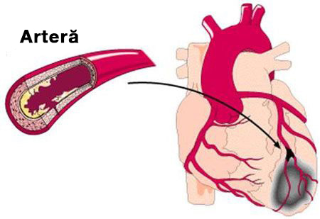

MEDICINA• INSTRUCȚIE
Un medic român vă va povesti despre riscurile hipertensiunii arteriale la bătrânețe
Ce se potrivește ideal pentru dizolvarea plăcilor de colesterol și îmbunătățirea circulației sângelui?
 |
Ioan Pop |

Milioane de oameni tratează mii de boli cu o grămadă de medicamente diferite, fără să-și dea seama că rădăcina răului nu este acolo unde doare. Colesterolul este invizibil, se acumulează liniștit, încet și imperceptibil, sufocând toate organele vitale.
Odată cu acumularea colesterolului în organism, riscul de a dezvolta boli asociate cu stenoza sau blocarea vaselor de sânge crește enorm.
Care este pericolul plăcilor de colesterol?
Acumularea colesterolului pe pereții vaselor de sânge începe în mod activ după 40 de ani, iar după 50 - la o rată uimitoare. Barierele "colesterolului" rezultate afectează fluxul sanguin. Treptat, se formează o placă aterosclerotică, iar diametrul vasului devine mai mic și mai mic. Acest lucru crește semnificativ riscul blocării cheagurilor de sânge. Când se întâmplă acest lucru, sângele încetează parțial sau complet să curgă către un anumit organ, ceea ce duce la încălcări grave ale funcționării sale sau la deces.

Pericolul constă, de asemenea, în cursul latent-asimptomatic al bolii. Starea vaselor se deteriorează în mod constant, iar încălcările vor apărea numai atunci când vasele sunt deja reduse la jumătate. Este imposibil să spunem exact cum se va manifesta ateroscleroza, totul depinde de organul care a fost lipsit de nutriția necesară. Cel mai adesea, ateroscleroza afectează vasele inimii, intestinelor, creierului, aortei, rinichilor, extremităților inferioare și pancreasului.
Acumularea de colesterol (ateroscleroza) are un efect dăunător asupra tuturor organelor și sistemelor corpului. Singura întrebare este Care organ va fi "legătura slabă" și nu va supraviețui mai întâi.
7 obiective de colesterol
Ateroscleroza aortică
Ateroscleroza aortică, este o leziune a celei mai mari artere din organism. Aorta seamănă cu un trunchi, din care se ramifică alte vase mai mici.
Aorta include 2 secțiuni:
- Toracice
- Abdominale
Regiunea toracică furnizează sânge organelor situate în piept, precum și creierului și gâtului.
Aorta abdominală direcționează sângele către organele situate în cavitatea abdominală și extremitățile inferioare.

Boala se dezvoltă în 2 etape:
- În stadiul inițial, nu există manifestări externe ale bolii. Dar complicațiile deja existente pot fi detectate cu ajutorul testelor de laborator.
- Perioada clinică este însoțită de semne pronunțate ale bolii.
Ateroscleroza aortei toracice
În stadiul inițial, patologia nu este însoțită de simptome. Primele simptome sunt, de obicei, dureri în piept. Durerea poate scădea, crește și poate dispărea pentru câteva zile. Adesea poate fi însoțită de dificultăți de respirație.
Alte simptome includ creșterea tensiunii arteriale și dezvoltarea hipertensiunii arteriale.
Cu o deteriorare semnificativă a arcului aortic, există dificultăți la înghițire, vocea devine răgușită. Leziunile aterosclerotice ale aortei toracice pot fi însoțite de o creștere a părului pe urechi. Pe față apar umflaturi, parul începe a însuri.
Alte simptome de deteriorare a aortei toracice:
- durere care radiază în regiunile brațului, gâtului și lombare;
- Tensiune arterială crescută;
- frecarea coastelor din partea dreaptă a pieptului;
- zgomot în cap;
- vertij;
- durere în gât atunci când încercați să vă întoarceți capul.
Pe fondul alimentării insuficiente a inimii cu sânge, se dezvoltă următoarele patologii:
- aritmie;
- insuficiență cardiacă;
- angină pectorală;
- atac de cord.
Deteriorarea aortei toracice este adesea combinată cu deteriorarea aterosclerotică a arterei coronare și deteriorarea vaselor de sânge ale creierului.
Ateroscleroza aortei abdominale
Leziunea aterosclerotică a aortei abdominale este însoțită de o încălcare a sistemului digestiv și se manifestă prin următoarele simptome:
- Dureri abdominale. Ele sunt de natură paroxistică. Adesea, pacientul nu poate specifica exact unde se află focalizarea durerii;
- Tulburări ale scaunului;
- Flatulență;
- Arsuri la stomac;
- Râgâit și gust de amărăciune;
- Tromboza arterei viscerale. O complicație periculoasă care poate duce la moarte. Este însoțită de bucle intestinale necrotizante și inflamații extinse. Însoțită de dureri foarte severe, care nu pot fi eliminate cu ajutorul analgezicelor.
Ca urmare a formării plăcilor în această zonă, există o încălcare a alimentării cu sânge a organelor pelvine. Ca complicații care apar mai târziu, pot fi observate insuficiență renală, boli ale arterelor viscerale.
Vasele de sânge ale creierului
Colesterolul, care duce la ateroscleroza cerebrală, distruge atât vasele intracraniene, cât și cele extracraniene. Intensitatea simptomelor patologice este direct legată de gradul și localizarea leziunilor rezultate.
În plus față de cea mai periculoasă complicație-accident vascular cerebral, puteți observa inhibarea sistemului nervos central, dezvoltarea tulburărilor psihice, deteriorarea vederii și a memoriei.

Primele semne ale leziunii apar deja la vârsta adultă-40-45 de ani.
În acest stadiu, este posibil să se manifeste atacuri ischemice, însoțite de o încălcare a sensibilității, tulburări de coordonare, patologii ale vederii, auzului și vorbirii. În ciuda severității simptomelor, în această perioadă acestea sunt de scurtă durată, reversibile și dispar de la sine după o singură curățare a vaselor cu nutraceutice.
Leziunile aterosclerotice Severe pot duce la accident vascular cerebral, adică necroza țesutului cerebral. Simptomele sunt aceleași ca în cazul precedent, dar nu există o îmbunătățire semnificativă după necroză.
Creierul este, de asemenea, responsabil pentru îndeplinirea funcțiilor mentale superioare. Prin urmare, formarea plăcilor duce, de asemenea, la o deteriorare a inteligenței și a memoriei, la o schimbare a caracterului (labilitatea dispoziției, capriciile, lenea). În absența măsurilor terapeutice pentru eliberarea vaselor de plăci, o astfel de leziune duce la dezvoltarea demenței, a bolii Alzheimer. Astfel de complicații sunt periculoase și pot duce la dizabilitate sau deces.
Există 2 tipuri de accident vascular cerebral:
- ischemic;
- hemoragic.
Accidentul vascular cerebral a atins deja limita de vârstă. Nu mai este asociat cu bătrânețea. Ischemia apare din cauza blocării patului vascular de către un cheag de sânge, cauza sângerării este o ruptură a vaselor de sânge ale creierului.
Inima
Una dintre cauzele decesului pacienților cu boli cardiovasculare pe fondul acumulării de colesterol în vasele de sânge este blocarea arterei coronare principale.
Această leziune este asociată cu boli precum boala coronariană, angina pectorală și infarctul miocardic.
Boala coronariană este o patologie severă a inimii, care este un întreg complex de tulburări. Acesta include angina, infarctul miocardic și cardioscleroza.

Cel mai adesea, boala coronariană se manifestă prin angină. Într-o fază incipientă, manifestările sale sub formă de durere toracică apar numai în timpul efortului fizic. Acest lucru este logic, deoarece în repaus, este necesar mai puțin oxigen pentru ca inima să funcționeze, iar cu activitate intensă, aceste nevoi cresc. O astfel de reacție poate fi stresul, stresul emoțional. Pe măsură ce ateroscleroza se dezvoltă și suprapunerea în diametrul patului vascular crește, boala ischemică devine mai pronunțată. În etapele ulterioare ale bolii, orice mișcare a pacientului provoacă deja durere.
Semnele clasice ale anginei includ:
- apariția durerii atât sub influența stresului, cât și în repaus;
- durerea este simțită în spatele sternului, poate merge la umăr (stânga), lama umărului, brațul. În plus, intensitatea
- durerii este direct legată de severitatea atacului;
- durere ascuțită, presantă;
- puteți opri atacul luând o tabletă de nitroglicerină;
- durata atacului va scădea: nu mai mult de 5 minute.
Diferențele dintre atacul de cord și angina pectorală
- durere de intensitate foarte mare;
- durata atacului este de cel puțin 20 de minute;
- nitroglicerina nu ajută la infarctul miocardic;
- senzațiile dureroase sunt împrăștiate.
Placa cauzată de nivelurile ridicate de colesterol poate duce la moartea subită a pacientului. Această situație se dezvoltă atunci când, din cauza eșecului alimentării cu sânge, ritmul cardiac se schimbă mai întâi și apoi inima se oprește.
Toate bolile cardiace vasculare sunt grave și periculoase. fără funcționarea completă a inimii, alte organe nu pot funcționa normal. Ateroscleroza vaselor inimii poate duce, de asemenea, la infarct miocardic. Un atac de cord este cauzat de o ruptură a plăcii și de un cheag de sânge care înfundă vasul. Ca urmare, sângele nu mai este furnizat într-o anumită zonă a mușchiului cardiac și apoi moare.
După dezvoltarea unei încălcări a contractilității mușchiului cardiac, moartea are loc în câteva ore sau zile. Cu toate acestea, chiar dacă o persoană a fost salvată, el are încă o insuficiență a alimentării cu sânge, care, fără a curăța vasele de sânge ale colesterolului, va duce mai devreme sau mai târziu la un al doilea atac. Prin urmare, curățarea vaselor de sânge cu nutraceutice este vitală pentru pacienții care au suferit un atac de cord.
În plus, pe fondul tulburărilor circulatorii, se dezvoltă hipertensiunea arterială. Aceasta este însoțită de o încălcare a funcțiilor inimii, a proceselor patologice în sistemul nervos central, a rinichilor.
Hipertensiunea arterială apare și pe fundalul leziunilor creierului, rinichilor și vaselor periferice. În patologia creierului, se manifestă printr-o încălcare a conștiinței, pierderea vederii și afectarea funcției renale, ceea ce duce la insuficiență renală.
Vasele extremităților inferioare
Complexul de simptome ale leziunilor membrelor inferioare care duc la depuneri de colesterol include:
- susceptibilitatea extremităților inferioare la frig;
- convulsii;
- șchiopătare;
- ulcere trofice, vasculare "plasă" și "stele" care apar după leziuni ale pielii;
- varice;
- durere care poate apărea atât în starea de activitate, cât și în repaus (poate varia în intensitate);
- distrugerea țesutului cartilajului, dezvoltarea osteoartritei.
În plus față de durere, există tulburări ale sistemului musculo-scheletic. Manifestările apar prin analogie cu tulburările inimii: în stadiul inițial, durerea apare numai cu efort fizic greu, plimbări lungi. În ultima etapă, durerea devine insuportabilă chiar și într-o stare de repaus.

Tulburarea periodică este principalul simptom în apariția leziunilor vasculare. Senzațiile dureroase sunt localizate în principal în mușchii coapsei și vițeilor.
Insuficiența alimentării cu sânge a extremităților inferioare provoacă paloare și amorțeală a pielii, părul de pe picioare începe să cadă. Ulcerele rezultate sunt extrem de dificil de tratat, datorită faptului că procesele regenerative nu sunt complet activate din cauza lipsei alimentării cu sânge. Ca urmare a unor astfel de modificări, gangrena începe mai devreme sau mai târziu: țesuturile mor. Luarea de medicamente în acest stadiu nu dă rezultate. Gangrena poate fi vindecată numai prin amputare.
Tratamentul include, pe lângă administrarea de nutraceutice destinate combaterii aterosclerozei, terapiei fizice și tratamentelor spa.
Arterele renale
Cu leziuni aterosclerotice ale vaselor care alimentează rinichiul cu nutriție, se dezvoltă arterioză secundară. Manifestările tipice sunt edemul, care se formează ca urmare a retenției de sodiu în organism, cea mai gravă situație fiind dezvoltarea edemului pulmonar. Una dintre consecințe este un infarct renal. Când rinichiul este afectat, simptomele bolii nu sunt pronunțate.
Blocarea arterei renale cu colesterol duce la formarea insuficienței renale acute.
Acestea sunt principalele manifestări ale aterosclerozei arterelor renale:
- hipertensiune arterială;
- edemul;
- dureri de spate;
- slăbiciune, pierderea puterii.
Cum să scapi de plăcile aterosclerotice?
Tratamentul se bazează pe curățarea sistematică a vaselor de sânge. Cel puțin o dată la 5 ani, începând de la 40 de ani pentru bărbați și de la 45 pentru femei.
Până de curând, era imposibil să scapi de plăcile aterosclerotice existente; terapia sa bazat pe încetinirea formării de plăci noi.
Dar totul sa schimbat odată cu descoperirea nutraceuticelor.
Mijloacele moderne de combatere a plăcilor de colesterol (nutraceutice) vă permit să curățați vasele de sânge acasă fără supravegherea specialiștilor. Principalul lucru este de a urma cu exactitate durata cursului de tratament. Durata efectivă a admiterii este de 1,5 luni.
În decurs de 1,5 luni, nutraceuticele elimină din vase, artere și capilare de la 89% la 97% din depozitele de colesterol. (Aproximativ 3.7 kg)
Ce reprezinta picăturile Cardiofort?
Picăturile Cardiofort - cea mai recentă clasă de medicamente pentru tratamentul și prevenirea aterosclerozei vaselor de sânge.
Picăturile Cardiofort combină siguranța și eficiența ridicată în lupta împotriva depozitelor de colesterol.
Picăturile Cardiofort sunt permise pentru autoadministrare pentru tratamentul aterosclerozei și a consecințelor acesteia.
Picăturile Cardiofort sunt naturale si elimină complet efectele secundare și complicațiile, astfel încât acestea sunt recomandate vârstnicilor și persoanelor cu boli cronice.
Cum afectează nutraceuticele organismul?
Picăturile Cardiofort acționează în 3 etape:
- 1. Eliminarea depozitelor de colesterol. Se dizolvă plăcile aterosclerotice, cheagurile de sânge și varul de calciu. Măresc lumenul vaselor de sânge și restabilesc circulația sângelui.
- 2. Eliminarea consecințele circulației insuficiente a sângelui. Bolile cum ar fi hipertensiunea, durerile de cap, varicele, diabetul de tip 2, tromboza și hemoroizii sunt complet sau semnificativ vindecate. Tinitusul, amețelile dispar, acuitatea vizuală și claritatea gândirii se îmbunătățesc.
- 3. Îmbunatățirea rezistenței și elasticității pereților vaselor. Acest lucru previne formarea de plăci noi și reduce riscul de accident vascular cerebral de 11 ori
«Cardiofort»

Picăturile "Cardiofort" astăzi sunt un nutraceutic modern de generația a 5-A, cu un efect unic care dizolvă până la 97% din depozitele de colesterol și dublează lumenul vaselor de sânge, restabilind circulația sângelui.
Acțiunea se bazează pe capacitatea moleculelor active ale substanței de a pătrunde în plăcile aterosclerotice prin acoperirea fibroasă. Acest efect asigură dizolvarea depozitelor de colesterol, ceea ce nu a fost posibil până de curând.
Administrarea picăturilor Cardiofort timp de 2 luni, de 2 ori pe zi cate 30 de picături intr-un pahar de apă dă următoarele rezultate:
- Elimină până la 97% din plăcile aterosclerotice.
- Întărește pereții vaselor de sânge.
- Normalizează tensiunea arterială.
- Stabilizează nivelul zahărului din sânge.
- Restabilește activitatea funcțională a creierului și a sistemului nervos.
- Oprește procesul de îmbătrânire a mușchiului cardiac.
- Reduce riscul de infarct miocardic.
- Crește bariera antioxidantă.
- Îmbunătățește circulația coronariană și cerebrală a sângelui.
- Normalizează schimbul de minerale în mușchiul inimii.
Convingeti-va de sine statator
Picături Cardiofort
Pacient
femeie, 67 de ani. La începutul tratamentului, s-au observat leziuni extinse ale aortei toracice și abdominale cu depozite de colesterol. Tulburări ale circulației sângelui în cavitatea abdominală, plămâni și bronhii.
femeie, 67 de ani. La începutul tratamentului, s-au observat leziuni extinse ale aortei toracice și abdominale cu depozite de colesterol. Tulburări ale circulației sângelui în cavitatea abdominală, plămâni și bronhii.
Complicații concomitente:
Hipertensiune arterială de gradul trei, edem al extremităților inferioare, vene varicoase, aritmie, stare prediabetică.
Hipertensiune arterială de gradul trei, edem al extremităților inferioare, vene varicoase, aritmie, stare prediabetică.
Plângerile pacientului:
dureri de cap, amețeli, tinitus, dureri și crampe la nivelul picioarelor, probleme de somn, presiune până la o criză hipertensivă.
dureri de cap, amețeli, tinitus, dureri și crampe la nivelul picioarelor, probleme de somn, presiune până la o criză hipertensivă.
Rețetă:
Picături Cardiofort, de 2 ori pe zi cate 30 de picături intr-un pahar de apă. O vizită de urmărire în 30 de zile și 60 de zile.
Picături Cardiofort, de 2 ori pe zi cate 30 de picături intr-un pahar de apă. O vizită de urmărire în 30 de zile și 60 de zile.
Angiograma generală a vaselor pacientului
Rezultatele tratamentului
Pe baza rezultatelor terapiei de 2 luni cu Picături Cardiofort, Au fost obținute următoarele rezultate
- Tensiunea arterială a revenit la normal 130-139 \ 85-89. Care ce este limita extremă a normei
- Edemul nu este observat.
- Nivelul zahărului nu depășește 5,5 mmol / l.
- Nu se observă semne de vene varicoase.
- Aritmia nu este monitorizată, pulsul este de 73 bătăi / min.
- Durerile de cap și tinitusul nu deranjează după prima săptămână de administrare a medicamentelor.
- Somn normalizat.
- Creșterea acuității vizuale.
- Tonul general și bunăstarea s-au îmbunătățit semnificativ
Circulația creierului a fost restabilită
Pacient
bărbat, 51 de ani. La începutul tratamentului, a existat o obstrucție semnificativă a circulației cerebrale.
bărbat, 51 de ani. La începutul tratamentului, a existat o obstrucție semnificativă a circulației cerebrale.
Complicații asociate:
Hipertensiune arterială, opacitate corneană, osteochondroză a regiunilor cervicale și toracice, prostatită cronică, hemoroizi acuta, hiperglicemie.
Hipertensiune arterială, opacitate corneană, osteochondroză a regiunilor cervicale și toracice, prostatită cronică, hemoroizi acuta, hiperglicemie.
Plângerea pacientului: dureri de cap
dureri, vedere încețoșată cu dereglări. Slăbiciune generală și apatie, refuzul de a face ceva. Eficiență scăzută, incapacitatea de a se concentra mult timp, lipsa de energie.
dureri, vedere încețoșată cu dereglări. Slăbiciune generală și apatie, refuzul de a face ceva. Eficiență scăzută, incapacitatea de a se concentra mult timp, lipsa de energie.
Rețetă:
Picături Cardiofort,de 2 ori pe zi cate 30 de picături intr-un pahar de apă. Vizita de urmărire în 30 de zile și 60 de zile
Picături Cardiofort,de 2 ori pe zi cate 30 de picături intr-un pahar de apă. Vizita de urmărire în 30 de zile și 60 de zile
Rezultatele tratamentului
Tratamentul de 1,5 luni cu picături Cardiofort a dat următoarele rezultate:
- Tensiunea arterială este complet normală.
- Nivel stabil de zahăr.
- Durerile de cap au dispărut.
- Creșterea eficienței și a activității.
- Energia a crescut semnificativ.
- Hemoroizii au dispărut.
- Durerea din spate, gât și articulații a dispărut.
- Creșterea acuității vizuale.
- Simptomele prostatitei nu se observa.
Un dezavantaj semnificativ al Cardiofort
Singurul și, de fapt, principalul dezavantaj Cardiofort nutraceuticalele - este prețul său.
Acest lucru este logic, deoarece nutraceuticalele sunt cele mai recente medicamente cu costuri ridicate de producție. Compoziția naturală este foarte solicitantă pentru condițiile de depozitare și prelucrare, ceea ce crește semnificativ costul de producție.
În majoritatea farmaciilor Cardiofort nu este livrat pur și simplu din cauza costului ridicat. Și medicii nu riscă să prescrie un medicament atât de scump.
O dată pe an producătorul Cardiofort împreună cu Comisia Internațională pentru colesterol, organizează O zi cu reducere . Toți oamenii care au nevoie să-și curețe vasele de sânge, să-și scadă nivelul de zahăr și să-și scadă tensiunea arterială pot obține Cardiofort cu o reducere.
Tine-ți minte această dată:
– Aceasta este Ziua Internațională a colesterolului.
În această zi, puteți comanda picături Cardiofort cu reducere, dar trebuie să îndepliniți mai multe condiții.
Condiții de reducere de 50% la Cardiofort:
- Numai pentru uz personal
Acest lucru este necesar pentru a evita afaceri cu revânzătorii care încearcă să cumpere produsul și să-l revândă din propriile motive. - Trimiteți cererea dvs. prin intermediul site-ului oficial.
Cumpărarea prin intermediul site-ului oficial este o garanție a calității și o protecție împotriva revânzătorilor.
Deci, nu ezitati, comanda-ti Cardiofort chiar acum. Deoarece a doua zi nu veți putea achiziționa produsul cu reducere.
Recenzii